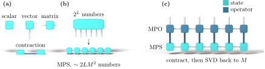
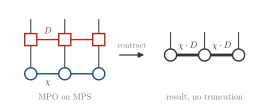

Page 9 of 12 of this session
7.9 Tensor diagrams as notation for networks and operators
How do we compute with an MPS without writing every index? We will now see a graphical notation, where a leg is an index and two joined legs are a sum over that index. In this notation an operator that acts on a state multiplies the bond dimensions, and a singular value decomposition cuts them back.
\[C(s_1,s_2,\dots,s_L) \;\approx\; M^{s_1}_{1}\, M^{s_2}_{2}\, \cdots\, M^{s_L}_{L}, \tag{7.5}\]
This is the matrix product state of Section 7.4. The coefficient \(C(s_1,\dots,s_L)\) of the state is a product of matrices, one for each site. Each \(M^{s_i}_i\) is a \(\chi\times \chi\) matrix for each value of the spin \(s_i\), and \(\chi\) is the bond dimension. At the two ends of an open chain the matrices are vectors.
Matrix product states come with a convenient graphical notation, which makes it much easier to think about both the ansatz and the algorithms built on it. A scalar, which is a tensor of rank 0, is drawn as a point. A vector, of rank 1, is a point with one free leg. A matrix, of rank 2, is a point with two legs. A tensor of rank 3 is a point with three legs, and so on for any rank. Each leg represents one index of the tensor, and when we join two legs of two tensors, this means that we sum over the shared index, which is called a contraction.
An MPS is then a horizontal chain of such points, with one point per site. Each point has one physical leg pointing down, which is the index \(s_i\), the local spin value. It also has one or two virtual legs that connect it to its neighbors in the chain, and these carry the bond-dimension index that is summed over.
A matrix product operator (MPO) represents an operator, in particular the Hamiltonian, in the same way. Now each site has two physical legs instead of one, which correspond to the two indices \(\sigma_i,\sigma_i'\) of the operator, and the same virtual legs that link neighboring sites. To apply an MPO to an MPS, for example to compute \(H|\Psi\rangle\), we join the two diagrams along the physical legs and contract them. This means that we multiply every pair of matrices that share an index and sum over that index. If we do this in a naive way, the bond dimensions of the two objects are multiplied, which would remove the advantage of the method.
In practice, we do a singular value decomposition of the result and keep only the largest singular values. In this way we truncate back to a bond dimension that we can handle, and we remove the least important part of the Hilbert space that is represented. This truncation step is the practical core of almost every MPS algorithm, including the two-site update of the ground-state search of the next section. Figure 7.4 shows together the notation, the ansatz (7.5) drawn in this notation, and this step of contraction and truncation.
An MPO of bond dimension \(D\) that acts on an MPS of bond dimension \(\chi\) gives an MPS of bond dimension \(\chi D\), so the new state has at most \(\chi D\) Schmidt terms at a bond. A singular value decomposition at each bond brings it back,
\[\chi \;\to\; \chi D \;\to\; \chi,\]
by keeping the \(\chi\) largest singular values. This truncation is the core of almost every MPS algorithm.
The steps From an MPO and an MPS to a bond of dimension chi times D, and back to chi
We write the tensor of the MPS at one site as \(M^{\sigma'}_{\alpha\beta}\), with the physical index \(\sigma'\) and the two virtual indices \(\alpha,\beta\), which take \(\chi\) values. The tensor of the MPO at the same site is \(W^{\sigma\sigma'}_{ab}\), with two physical indices and two virtual indices \(a,b\), which take \(D\) values. Joining the physical legs is the sum over \(\sigma'\),
\[N^{\sigma}_{(a\alpha),(b\beta)}=\sum_{\sigma'}W^{\sigma\sigma'}_{ab}\,M^{\sigma'}_{\alpha\beta}.\]
The new tensor has one physical index \(\sigma\). Its left index is the pair \((a,\alpha)\), which takes \(D\cdot \chi\) values, and so does its right index. So the result is again an MPS, with the bond dimension \(\chi D\). The new state has at most \(\chi D\) Schmidt terms at a bond, and it can have fewer. For the MPO of the Heisenberg chain, with \(D=5\), and a random MPS with \(\chi=4\) on 10 sites, the bonds in the bulk are 20. The new state has at most 12 Schmidt terms at a bond. The simplest case is a product state, \(\chi=1\), and a product operator, \(D=1\), such as \(\prod_i\sigma^x_i\), which flips every spin, and then the result is again a product state.
To cut the bond back, we write the state at one bond in its Schmidt form,
\[|\Psi\rangle=\sum_{k=1}^{\chi D}s_k\,|L_k\rangle\otimes|R_k\rangle, \qquad s_1\ge s_2\ge\dots\ge0,\]
where the states \(|L_k\rangle\) on the left are orthonormal, and so are the states \(|R_k\rangle\) on the right. This is the singular value decomposition of the coefficients, with the sites on the left as rows and the sites on the right as columns. In an MPS it is done on the tensors next to the bond, once the others are in an orthonormal form, so it never builds the \(2^L\) coefficients. We keep the \(\chi\) largest \(s_k\). For a normalized state the squared distance between \(|\Psi\rangle\) and the truncated state, before it is normalized again, is the dropped weight
\[\varepsilon=\sum_{k>\chi}s_k^2,\]
and no other state with at most \(\chi\) Schmidt terms at this bond is closer. When the Schmidt weights fall fast, as for a gapped chain, \(\varepsilon\) is small already for a moderate \(\chi\).

An MPO of bond dimension \(D\) acts on an MPS of bond dimension \(\chi\). We contract the physical legs and do not truncate. What is the bond dimension of the result?
Show the answers
- A. ✓ True
This is true. Each bond of the result carries one index of the state and one of the operator, so the dimensions multiply. This growth is the reason why a truncation by singular value decomposition follows each operation.

An MPO acts on an MPS. Each bond of the result joins one bond of the MPO and one of the MPS, so it has the dimension \(\chi\cdot D\). - B. ✗ False
This is false. Take a product state, \(\chi=1\), and a product operator, \(D=1\). The sum gives 2, but the result is again a product state with bond dimension 1.
- C. ✗ False
This is false. For a product state, \(\chi=1\), acted on by an operator with \(D=5\) the formula gives \(1^5=1\). The result has a bond that can be as large as \(1\cdot5=5\).
A tensor has three legs, and each leg has dimension \(4\). How many numbers does it contain?
Show the answers
- A. ✗ False
This is false. The sum counts three separate vectors of 4 entries. A tensor has one number for each combination of the indices, and the tensor with legs \(2,2,2\) has 8 entries and not 6.
- B. ✓ True
This is true. The number of entries is the product of the dimensions of the legs, \(4\times4\times4=64\).
- C. ✗ False
This is false. The value \(4^4\) is the number of entries of a tensor with four legs. With three legs the indices \((i,j,k)\) take \(4\times4\times4=64\) values.
Each diagram is built from the tensors of a chain of four sites. A joined leg is a sum over its index. Which diagram is a number?
Show the answers
- A. ✗ False
This is false. The four free legs are the spins \(s_1,\dots,s_4\), so the diagram is the tensor \(C(s_1,\dots,s_4)\) of the state \(|\Psi\rangle\), with \(2^4=16\) entries.
- B. ✓ True
This is true. Every leg joins two tensors, so every index is summed and nothing is left. The diagram is the norm \(\langle\Psi|\Psi\rangle\), with the MPS on top and its complex conjugate below.
- C. ✗ False
This is false. The legs between the circles and the squares are summed, but the four upper legs of the squares are free. The diagram is the state \(H|\Psi\rangle\), again with \(2^4=16\) entries.
An MPS of a spin-1/2 chain has the bond dimension \(\chi=10\), and an MPO with \(D=5\) acts on it, which is the bond dimension of the MPO of the Heisenberg chain. Find the bond dimension of the result before any truncation. Then count the numbers of one bulk tensor before the contraction, after it, and after the truncation back to \(\chi=10\).
Solution
Each bond of the result carries one index of the MPS and one of the MPO, so its dimension is \(\chi D=10\times5=50\). A bulk tensor has one physical leg of dimension 2 and two virtual legs. Before the contraction it has \(2\chi^2=2\times10^2=200\) numbers, after it \(2\times50^2=5000\), and after the truncation \(200\) again.
One application of the MPO makes each tensor \(D^2=25\) times larger, and a second one without truncation would give \(2\times250^2=1.25\times10^5\) numbers. This is why MPS algorithms truncate after each application of an operator, so that the cost stays set by \(\chi\).